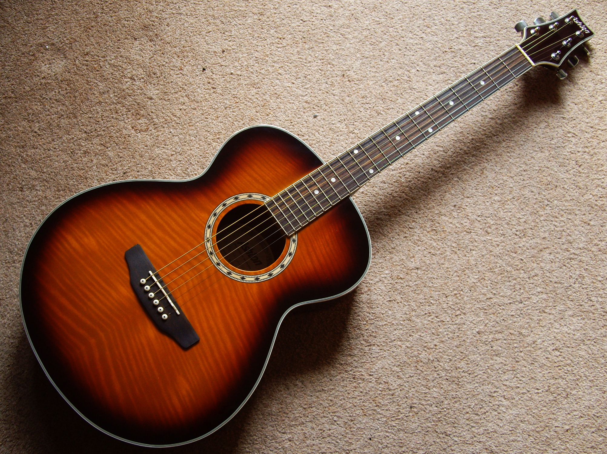
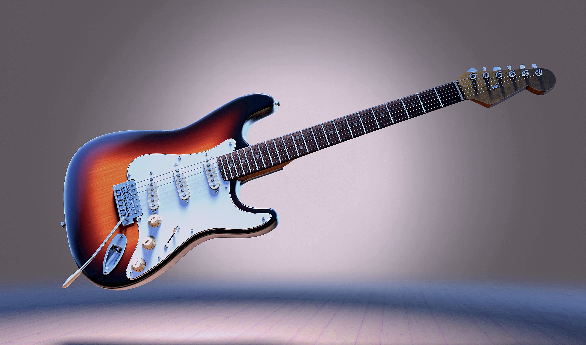

Поиск
Поиск
 Гитара – наиболее популярный музыкальный инструмент в мире. Сегодня без неё не обходится ни один концерт живой музыки. Она хороша как в составе оркестра, бэнда или музыкальной группы, так и в одиночных упражнениях, где музыкант может получить удовольствие даже от игры наедине с самим собой.
В самом широком смысле любая гитара – это хордофон, звук получается в результате колебаний струны, натянутой между двумя точками. Такие изделия известны с древнейших времён. Они уже были в древнеегипетской цивилизации и даже раньше – в земледельческих средиземноморских культурах медного и бронзового века. Гитару историки музыкальных инструментов относят к семейству лютни, так как она имеет не только корпус, но и гриф, на котором струны зажимаются пальцами.
Предшественниками гитары считаются щипковые инструменты, которые на тот момент ещё не имели грифа: кифара и цитра. На них играли в Древнем Египте и Древней Греции, а чуть позже – и в Риме. С появлением длинной узкой шейки появилась необходимость в цельном резонаторе. Изначально его делали из пустотелых сосудов и других объёмных предметов: панциря черепахи, высушенных плодов тыквы или выдолбленных деревянных отрезков ствола. Деревянный корпус, составленный их верхней и нижней деки и боковин (обечаек) придумали в Древнем Китае в начале I тысячелетия нашей эры. Оттуда эта идея перекочевала в арабские страны, воплотившись в мавританской гитаре, а в VIII – IX веках пришла в Европу.
Своим названием гитара обязана латинскому языку как общепринятому в период Средневековья. Греческое слово «кифара», которое в Европе уже мало кто мог прочесть после крушения Западной Римской империи, в результате транслитировалось в латинское cithara. С течением времени латынь также претерпевала изменения – слово имело вид quitaire, и в романо-германских языках стало звучать как guitar.
В период позднего Средневековья и начала Нового времени центром развития музыки была Испания. Во времена Кордовского халифата здесь получила распространение мавританская гитара, а после реконкисты испанцы модернизировали её, придав форму, близкую к современной. У инструментов XV века было 5 парных струн, натягиваемых колками, расположенными на длинной головке. Уже к концу XVIII века складывается современный облик: гитара обзаводится шестью одинарными струнами, удобным корпусом с вырезами для лучшего удержания, а также круглым отверстием в верхней деке.
В России XVIII – XIX веков музыка была чрезвычайно популярна. Широкое распространение испанской гитары в Москве и Петербурге подтолкнуло отечественных музыкантов к созданию инструмента на испанской основе, но с российским колоритом. Также мастера использовали наработки англичан с их народными инструментами из рода цистр. Так появилась русская семиструнная гитара. Сегодня её иногда называют цыганской. Её строй отличается от привычной шестиструнной, а сферой применения на протяжении XIX и XX веков стал аккомпанемент при исполнении русских романсов. Сегодня русская гитара встречается реже, хотя продолжает использоваться некоторыми бардами и коллективами, исполняющими традиционную музыку.
В XIX веке музыкант и гитарный мастер Антонио Торрес изобрёл гитару современной конструкции и пропорций. Сегодня она называет классической, применяется как в академической музыке, так и при исполнении песен музыкантами-любителями в развлекательных целях. Акустическая гитара дошла до нас практически в неизменном виде. Она состоит из массивного корпуса, служащего резонатором, грифа, который крепится к корпусу с помощь специального винта, и головки, на которой расположены колки для натяжения струн. В акустической гитаре 19 ладов – металлических рёбер на накладке грифа, которые позволяют извлекать ноты с определённым интервалом. При этом если на классической гитаре от верхнего порожка до начала корпуса 12 ладов, то у появившейся позднее акустической – 14. На последней иногда присутствует вырез, позволяющий сыграть высокие ноты. Правильная поза для игры на классической гитаре (для правши) – спина ровная, левая нога на специальной подставке, гитара лежит изгибом корпуса на бедре левой ноги. Гриф поднят кверху на 45°. Известная большинству поза на правом колене с грифом, параллельным земле считается неакадемичной, «дворовой».
Когда в XX веке электричество начало своё победное шествие по планете, фабриканты музыкальных инструментов не могли обойти  стороной возможность значительно усилить звук струн гитары с помощью технических устройств. В 1936 году впервые была создана «бабушка» электрогитары. Она имела алюминиевый корпус и пару звукоснимателей на электромагнитах. Благодаря круглой форме корпуса, больше похожей на банджо, и материалу, она получила прозвище «сковородка». Благодаря преобразованию акустических колебаний в электрические и действие усилителей электрогитаре не нужен резонатор – её корпус может быть самых разных форм, хотя чаще и делается похожим на акустическую гитару.
С помощью бас-гитары воспроизводится низкочастотный регистр при исполнении музыкальных произведений. На ней обычно 4 струны и более длинный гриф. Акустические варианты встречаются очень редко, так как низкие частоты слышны намного хуже при естественном резонансе корпуса. Во второй половине XX века некоторые басисты-виртуозы стали использовать безладовый бас, который позволял обойтись без фиксированного музыкального строя.
Самый лучший способ узнать гитару поближе – это купить и начать играть. Тогда история создания гитары станет вам намного ближе, а строки «Изгиб гитары жёлтой…» обретут особый смысл.
.